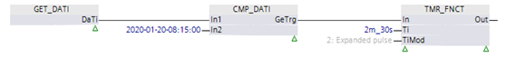

[CMP_DATI] 比较日期和时间
功能块 CMP_DATI 比较数据类型 DateAndTime 的两个值。
CMP_DATI 比较数据类型 DateAndTime 的两个值，并向输出提供 In1 大于 In2、In1 大于或等于 In2、In1 等于 In2、In1 小于或等于 In2 和 In1 小于 In2 的逻辑结果。
CMP_DATI 提供输出 [DTi] 处 In1 和 In2 值之间的时间差。时间差的结果限于输出处的数据类型的范围。
输入 | 描述 | 数据类型 | 默认值 |
|---|---|---|---|
In1…In2 | Input 1…Input 2 | DateAndTime | 01.01.1990 |
输出 | 描述 | 数据类型 | 默认值 |
|---|---|---|---|
Gt | In1 greater than In2 | 布尔值 | 0 |
0 - In1 小于或等于 In2。 | |||
Ge | In1 greater or equal to In2 | 布尔值 | 0 |
0 - In1 小于 In2。 | |||
Eq | In1 equals In2 | 布尔值 | 0 |
0 - In1 不等于 In2。 | |||
Le | In1 less than or equal to In2 | 布尔值 | 0 |
0 - In1 大于 In2。 | |||
Lt | In1 less than In2 | 布尔值 | 0 |
0 - In1 大于或等于 In2。 | |||
GeTrg | Greater or equal trigger 当 In1 大于或等于 In2 时触发脉冲。 | 布尔值 | 0 |
DTi | Delta time | 时间 | 0 ms |
输出 [GeTrg] 可用于将自动化站的预设系统时间与输入 [In2] 处的组态时间进行比较，并在当前系统时间达到输入 [In2] 处的时间时触发脉冲。将系统时间与输入 [In1] 互连。如果[In1]大于或等于[In2]，则输出[GeTrg]设置为1并持续一个周期。输入 [In2] 处的变化不会触发输出 [GeTrg] 处的脉冲。
